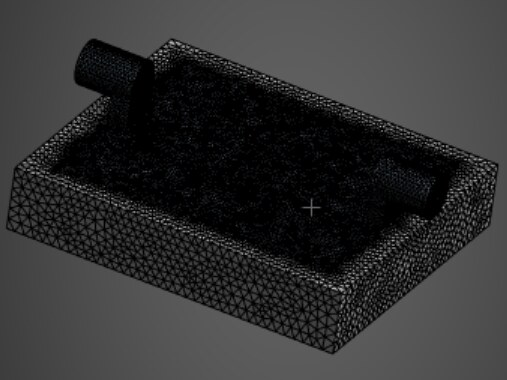

Liquid cold plates for chip cooling
A cold plate sits on a hot chip and carries heat away through coolant flowing in internal channels. I designed additively manufactured fin layouts to lower chip temperature without driving up pumping pressure, for the ASME K-16 / IEEE ITherm student cold plate design competition.
- Role
- Thermal/Fluids Research Intern, METTL
- Dates
- May 2026 – present
- Tools
- SolidWorks, ANSYS Fluent
- Status
- Simulated; build and test in Spring 2027
- 5 geometries, 25 CFD runs of conjugate heat transfer and coolant flow
- 3.5 °C lower simulated peak chip temperature vs. baseline
- 8% lower thermal resistance and 15% lower pressure drop
- Within 0.6 °C between fine meshes in the mesh-refinement check